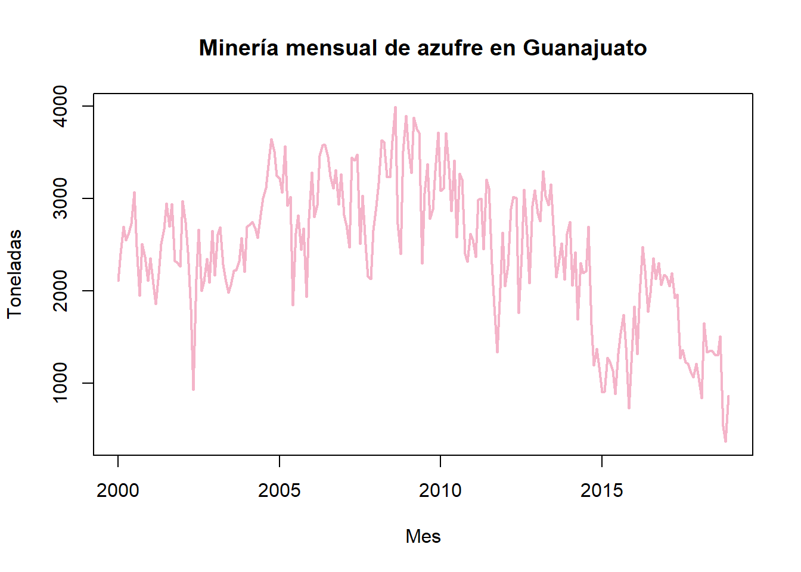
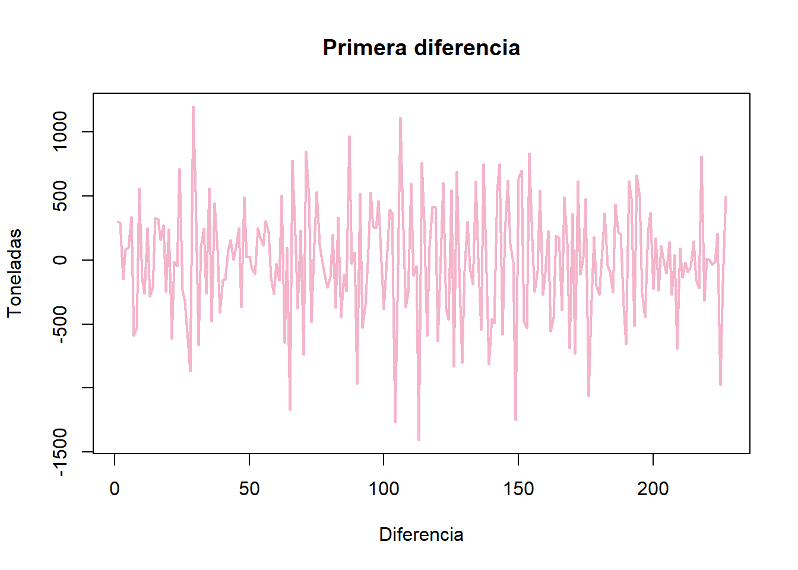
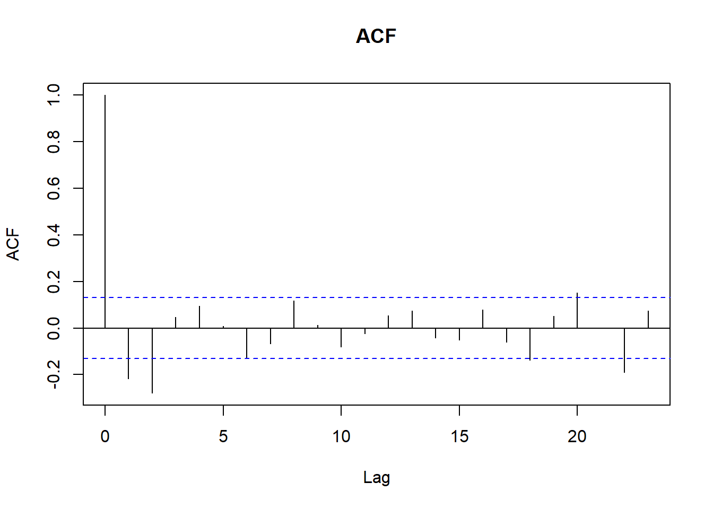
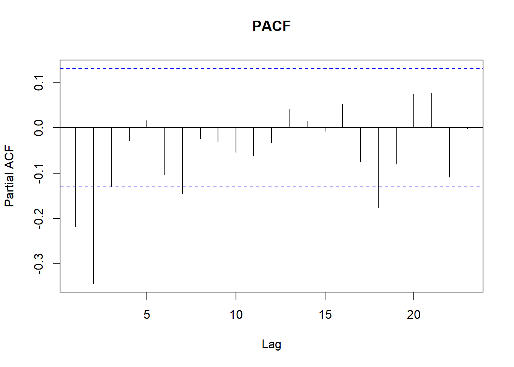
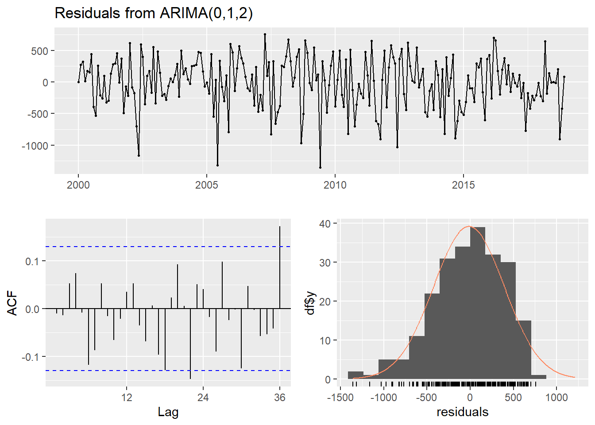
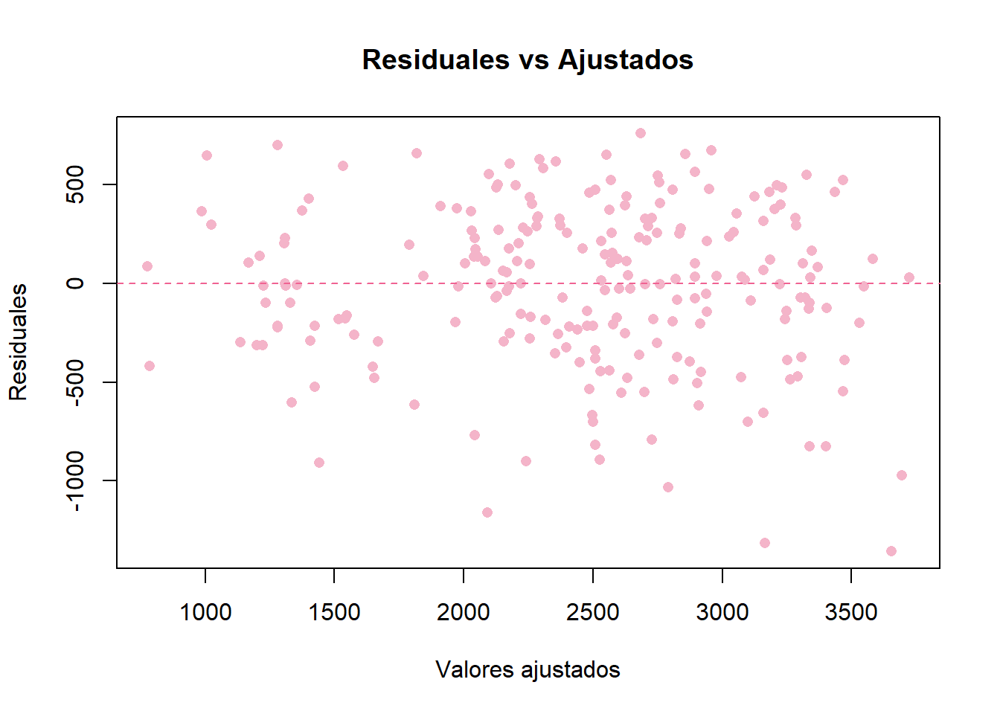
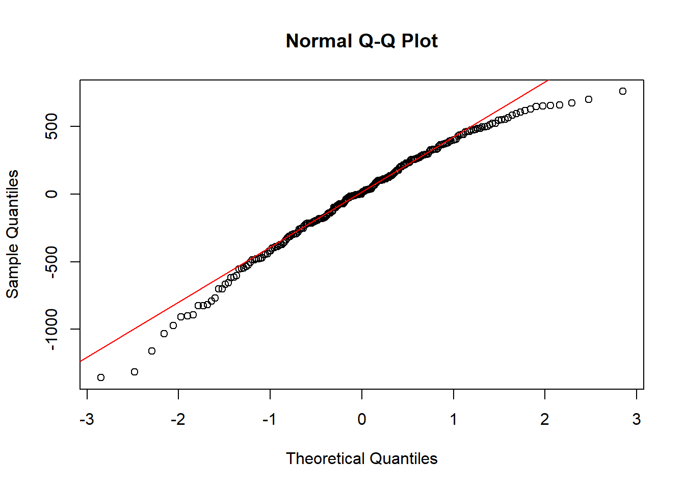
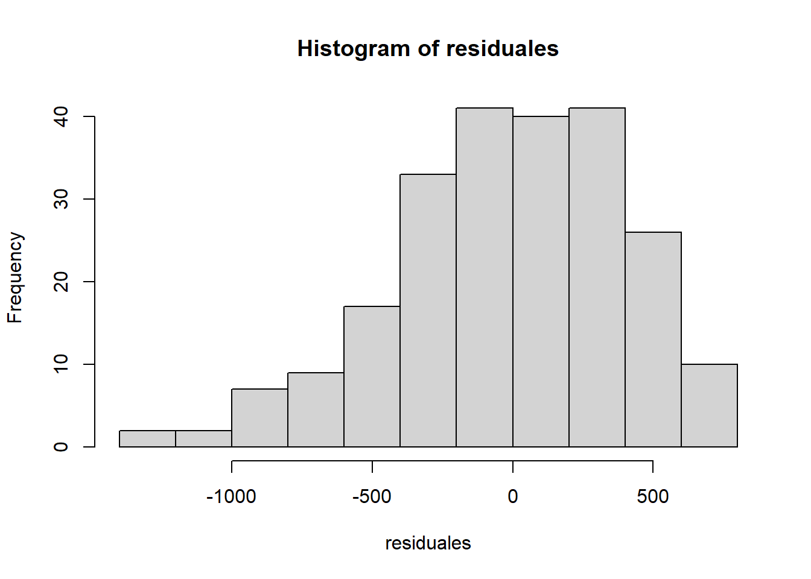
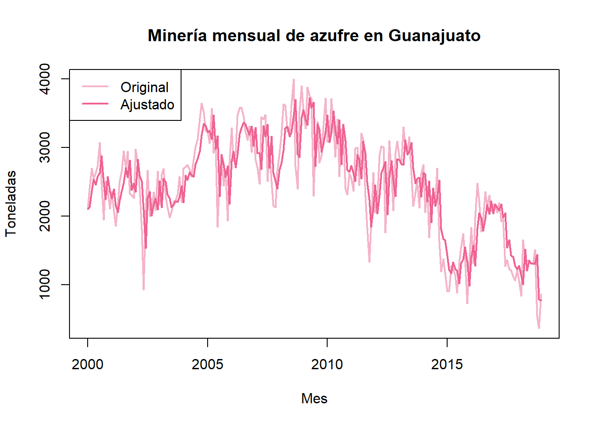

Código
### EJEMPLO DE AZUFRE ###
### Librerías necesarias
library(nortest) # Anderson-Darling
library(forecast) # Librería necesaria para la función Arima
library(tseries) # Prueba Dickey-Fuller para estacionariedad
azufre = c(2108, 2407, 2697, 2550, 2635, 2730, 3069, 2480, 1950, 2511, 2370,
2108, 2356, 2072, 1860, 2190, 2511, 2670, 2945, 2697, 2940, 2325,
2310, 2263, 2976, 2744, 2418, 1800, 930, 2130, 2667, 2001, 2106,
2350, 2091, 2651, 2171, 2614, 2692, 2285, 2130, 1979, 2063, 2222,
2224, 2320, 2572, 2206, 2698, 2719, 2747, 2680, 2575, 2827, 3004,
3119, 3426, 3645, 3512, 3247, 3220, 3062, 3566, 2920, 3018, 1848,
2627, 2821, 2445, 2676, 1937, 2785, 3281, 2798, 2927, 3461, 3580,
3581, 3454, 3240, 3110, 3308, 2934, 3266, 2822, 2712, 2472, 3444,
3415, 3475, 2511, 3032, 2503, 2155, 2131, 2658, 2916, 3168, 3632,
3612, 3232, 3229, 3624, 3990, 2723, 2401, 3514, 3898, 3533, 3279,
3876, 3754, 3706, 2298, 3059, 3371, 2780, 2886, 3304, 3715, 3084,
3110, 3711, 3329, 2863, 3411, 2579, 3270, 3205, 2401, 2318, 2621,
2556, 2371, 2985, 2999, 2454, 3205, 3107, 2292, 1831, 1339, 1882,
2632, 2051, 2272, 2893, 3021, 3007, 1760, 2396, 3095, 2616, 2084,
2921, 3089, 2841, 2755, 3298, 3026, 2928, 3156, 2597, 2149, 2339,
2513, 2124, 2617, 2746, 2058, 2418, 1690, 2305, 2191, 2215, 2695,
1632, 1196, 1375, 1175, 903, 910, 1276, 1232, 1138, 888, 1322,
1540, 1743, 1386, 731, 1350, 1832, 1317, 1982, 2477, 2220, 1772,
1983, 2356, 2132, 2302, 2067, 2176, 2158, 2054, 2196, 1925, 1964,
1273, 1364, 1229, 1211, 1119, 1067, 1213, 1058, 839, 1653, 1337,
1349, 1347, 1311, 1302, 1510, 535, 368, 864)
az = ts(azufre, start = c(2000, 1), frequency = 12)
# Gráfica de la serie de tiempo
plot(az, main = "Minería mensual de azufre en Guanajuato",
xlab = "Mes", ylab = "Toneladas",
col = "#F4B4C9", lwd = 2) 
Código
#points(az, pch = 16, col = "#CE93D8") # Graficamos los datos con circulos
adf.test(az) # Prueba de Dickey-Fuller para estacionariedad.
Augmented Dickey-Fuller Test
data: az
Dickey-Fuller = -2.2567, Lag order = 6, p-value = 0.4681
alternative hypothesis: stationaryCódigo
########## Revisamos la primer diferencia
az_diff = ts(diff(az))
# Gráfica de la serie de tiempo
plot(az_diff, main = "Primera diferencia",
xlab = "Diferencia", ylab = "Toneladas",
col = "#F4B4C9", lwd = 2) 
Código
#points(az_diff, pch = 16, col = "#CE93D8") # Graficamos los datos con circulos
adf.test(az_diff) # Prueba de Dickey-Fuller para estacionariedad.
Augmented Dickey-Fuller Test
data: az_diff
Dickey-Fuller = -7.9615, Lag order = 6, p-value = 0.01
alternative hypothesis: stationaryCódigo
# Revisamos ACF y PACF de la segunda diferencia
acf(az_diff, main = "ACF")
Código
pacf(az_diff, main = "PACF")
Código
# Ajustamos un modelo ARIMA
modelo = Arima(az, order = c(2,1,2))
modelo = auto.arima(az)
summary(modelo)Series: az
ARIMA(0,1,2)
Coefficients:
ma1 ma2
-0.3434 -0.2917
s.e. 0.0649 0.0684
sigma^2 = 169125: log likelihood = -1687.67
AIC=3381.35 AICc=3381.46 BIC=3391.62
Training set error measures:
ME RMSE MAE MPE MAPE MASE
Training set -15.69207 408.533 324.3837 -4.777137 16.18093 0.5387357
ACF1
Training set -0.01066291Código
residuales = as.numeric(modelo$residuals) # Guardamos residuales.
ajustados = as.numeric(modelo$fitted) # Guardamos valores ajustados.
checkresiduals(modelo)
Ljung-Box test
data: Residuals from ARIMA(0,1,2)
Q* = 26.786, df = 22, p-value = 0.2195
Model df: 2. Total lags used: 24Código
# Gráfica de ajustados vs residuales
plot(ajustados, residuales,
xlab = "Valores ajustados",
ylab = "Residuales",
main = "Residuales vs Ajustados",
pch = 16, # punto sólido
col = "#F4B4C9")
abline(h = 0, col = "#F06292", lty = 2)
Código
# Prueba de Ljung-Box para analizar la autocorrelación de los residuales
#Box.test(residuales, lag = 40, type = "Ljung-Box")
ad.test(residuales) # Prueba de normalidad para los residuales
Anderson-Darling normality test
data: residuales
A = 0.99606, p-value = 0.01236Código
qqnorm(residuales)
qqline(residuales, col = "red")
Código
hist(residuales)
Código
# Gráfica de la serie de tiempo
plot(az, main = "Minería mensual de azufre en Guanajuato",
xlab = "Mes", ylab = "Toneladas",
col = "#F4B4C9", lwd = 2)
#points(az, pch = 16, col = "#F4B4C9") # Graficamos los datos con circulos
ajustados_ts = ts(ajustados, , start = c(2000, 1), frequency = 12)
# Encimamos los valores ajustados.
lines(ajustados_ts, col = "#F06292", lwd = 2)
#points(ajustados, col = "#CE93D8", lwd = 2, pch = 16)
# Añadir leyenda
legend("topleft", legend = c("Original", "Ajustado"),
col = c("#F4B4C9", "#F06292"), lwd = 2)
Código
predic = forecast(modelo,12)
plot(predic, col = "#F06292", lwd = 2)
reales = c(0, 493, 1246, 1428, 1711, 1585, 1587, 1297, 313, 44, 0,133)
reales_ts = ts(reales, start = c(2019,1), frequency = 12)
lines(reales_ts, col = "orange", lwd = 2)